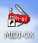
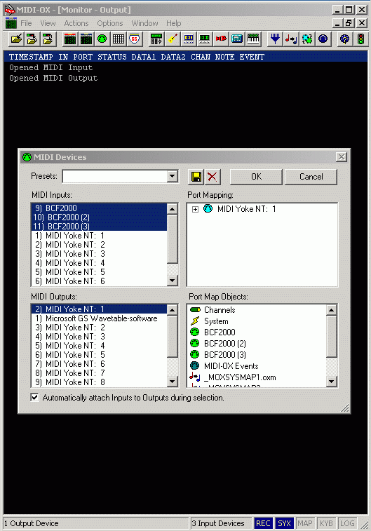
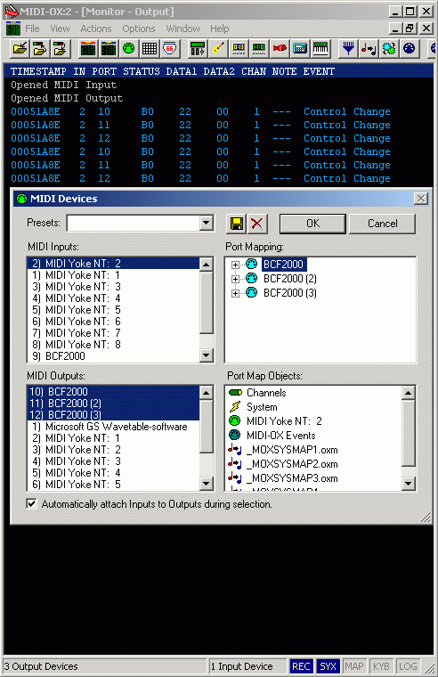
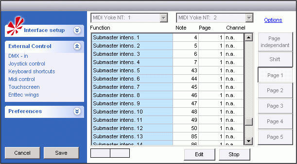

Midi-ox Setup
What is Midi.
MIDI stands for Musical Instrument Digital Interface Musical Instrument Digital Interface.
When more Midi devices are to be used there may be the problem that they don’t have extra midi inputs and outputs to interconnect with.
If the midi devices has an additional usb interface then this can be used to combine more devices with using a software tool / driver as Midiox.
To use the Midi-ox two sockets are needed. One for input and one for output.
One midi socket are used to merge the midi devices into one channel.
The other socket are used to split the return signal out to all the devices.

The Midiox is used in combination with Midiyoke. The Midiox is the Swiss-knife that can be used for many things. It can merge, split and monitories midi signals. Additional it can send keyboard stroke as note and a lot of other things that can be handy.
Midiyoke is a driver that makes a virtual connection between sw. which here is Midiox and FreeStyler.
Midiox and Midiyoke can be found here. Link to midiox
When both are installed the Midiox can be found via the Swiss-knife icon.

There are to be opened two Midiox windows. One for the merge function from the BCFs to FreeStyler and one for the split function from FreeStyler to BCFs.
Configuration of the Midiox are done with the blue connector icon (number 3 from right)
The Merge function is set with BCF 1, BCF 2 and BCF 3 as input and MidiYoke 1 as output.

Note the keyboard icon (number 7 from the right) this can be used to test the configuration. It will send a note related to the PC keyboard to, in this case, MidiYoke 1 and there by to Freestyler.
The note send and the values related to the note can be seen in the monitor window behind.
The split function is set with MidiYoke 2 as input and BCF 1, BCF 2 and BCF 3 as output.

FreeStyler is setup to MidiYoke 1 as midi input and MidiYoke 2 as output.

{kind=link}
{kind=link}
{kind=link}
{kind=link}